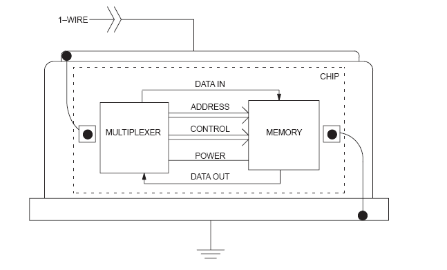
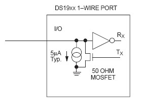
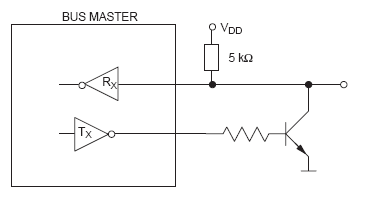
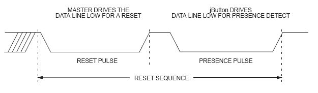
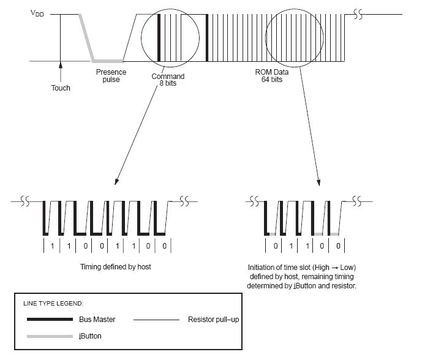
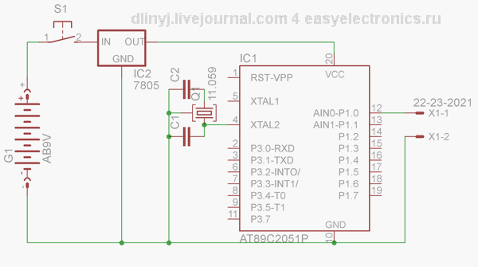
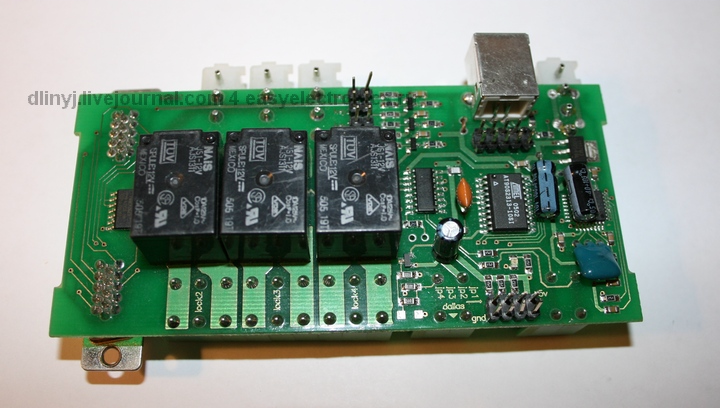
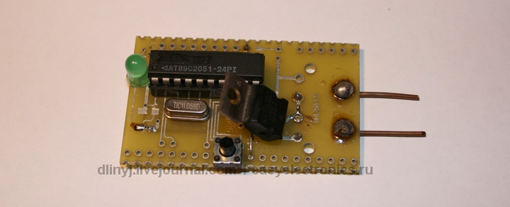
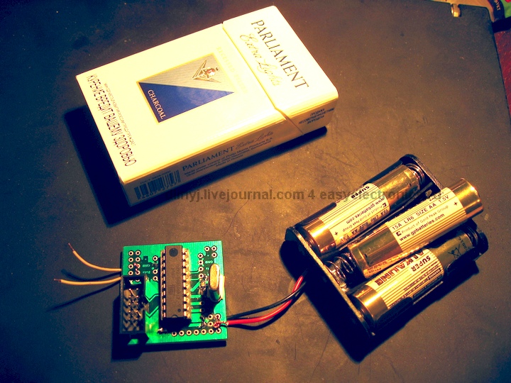

Ты потерял ключи от домофона и не можешь сделать дубликат. Хочешь ходить в гости к подруге, но у тебя нет ключей от её подъезда. Либо просто тебе нужно подосрать твоему недругу, но ты не можешь попасть к нему в дом, тогда эта статья для тебя.
Пара слов о принципе работы…
Бытует мнение, что в таблетках от домофона находится магнит, и он открывает дверь. Нет, это не так. Таблетка представляет собой ПЗУ, с жёстко зашитым в ней ключом. Называется это ПЗУ - Touch Memory, марки DS1990A. DS1990A - это и есть марка домофонных ключей. Общается с домофоном по шине one-wire (однопроводной интерфейс). Эта шина разработана фирмой Dallas и позволяет общаться двум устройствам всего по одному проводу. Если устройство пассивное (как в нашем случае), то оно ещё и передаёт ему питание по этому проводу. Надо ещё заметить, что необходим ещё общий провод (чтобы цепь замыкалась), но, как правило, все земли устройств подключённых к этой шине соединены воедино. В ключе находится конденсатор на 60 пикофарад, который обеспечивает кратковременное питание ключа на момент ответа. Но ведущее устройство должно постоянно (не реже чем в раз 120 микросекунд) генерировать сигнал единицы, для зарядки этого конденсатора, чтобы ПЗУ в таблетке продолжало питаться.
Короче говоря, отбросив все умные термины можно сказать просто, все, что необходимо для работы устройства передаётся только по одному проводу. Для сравнения для работы USB необходимо 4 провода, а тут будет всего два, а при соединении земли, то только один. К слову сказать, шина 1-Wire оказалась столь удачной, что на ней даже организованны промышленные сети, в том числе и в нашей стране.

Внутреннее устройство таблетки
Организация шины One-wire
Шина One-wire работает следующим образом. Есть ведущее устройство Мастер, и ведомое устройство, в нашем случае пассивный ключик . Основные сигналы генерирует мастер, сигналы логической единицы и нуля. Ведомое устройство может только принудительно генерировать сигналы нуля (т.е. просто просаживать шину на землю через транзистор). Упрощённая схема ведущего и ведомого устройства показана на картинках.

Схема таблетки:

Схема мастера
Если взглянуть на схему, нетрудно заметить, что по умолчанию у мастера стоит всегда +5 вольт, а ля логическая единица. Для передачи логического нуля мастер через транзистор замыкает шину на землю, а для передачи единицы - просто размыкает. Это сделано для того, чтобы обеспечить питание ведомого устройства. Ведомое устройство сделано аналогично, только оно не генерирует +5 вольт. Оно может только просаживать шину на землю, тем самым, передавая логический ноль. Логическая единица передаётся просто “молчанием” устройства.
Протокол работы
Сразу можно однозначно заметить, что парадом правит только Мастер, сам ключик DS1990A либо удерживает землю (мастер её сам выставляет шину в ноль), либо просто отмалчивается, в случае, если он хочет передать единицу, то он просто молчит. Смотрим рисунок.

Импульс сброса и импульс инициализации.
Домофон, в режиме простоя постоянно генерирует импульс RESET. Когда подключается таблетка, то она отвечает ему импульсом PREFERENCE, показывая мастеру о том, что можно с ней работать. Это одни из самых длинных импульсов. (подробнее о длительности импульсов ты можешь узнать в даташите лежащей в архиве).

Пример чтения домофоном ключа
После генерации ключом импульса PREFERENCE, мастер девайс выжидает некоторое время и выдаёт команду на чтение ПЗУ, обычно это код семейства, в нашем случае 33H. Обрати внимание, как сделана передача нуля и единицы. В любом случае импульс “роняется” на землю, но если передаётся единица, то он быстро восстанавливается (около 1 микросекунды), если же должен быть ноль, то импульс некоторое время “висит” на земле, затем возвращается опять в единицу. Возвращение в единицу нужно для того, чтобы пассивное устройство постоянно пополняло энергию конденсатора, и на ней было питание. Далее домофон выдерживает некоторое время и начинает генерировать импульсы приёма информации, всего 64 импульса (т.е. принимает 64 бита инфы). Ключ лишь должен правильно сопоставить длительности. Если он хочет вывести ноль, то он удерживает шину некоторое время в нуле, если же нет, то просто молчит. Всё остальное за него делает домофон.
Содержимое ключа DS1990A
В домофонах, и просто устройствах, где для открытия дверей используется подобные устройства, применяется ключ стандарта DS1990A. Это устройство представляет собой 8-ми байтовое ПЗУ, с информацией записанной лазером.
Схема дампа ключа
В младшем байте содержится код семейства. Для DS1990A он всегда будет равен 01h. В шести последующих байтах содержится серийный номер ключа. То самое сокровенное, что идентифицирует ключик. Последний байт называется CRC, это контроль чётности, обеспечивающий подлинность переданных данных. Он вычисляется из семи предыдущих байт. К слову заметить, что это не единственный стандарт. Существуют перезаписываемые ПЗУ, на которых можно носить информацию, также есть ключи шифрования. Но всё многообразие таблеток Dallas просто нереально рассмотреть в рамках одной статьи, о них можно почитать на диске.
Физическое устройства ключа
Наверное, всё вышесказанное отбило всякое желание заниматься эмуляторами ключей, ведь ключ надо прочитать, а это такой геморрр. Оказывается нет! Производители Dallas позаботились о нас и всю необходимую для нас информацию разместил непосредственно на ключе, при том в шестнадцатеричной системе! Она выгравирована на нём и её вполне можно прочитать, а потом в дальнейшем зашить в наш замечательный эмулятор.
Морда ключа
Нас интересует из всей этой информации следующее:
Получается, что мы можем просто написать программу, забить в неё ключ весь, переписав ручками визуально с настоящего ключа дамп, и получим готовый эмулятор. Достаточно просто взять у недруга ключик в руки и переписать то, что на нём написано. Что я в общем-то с успехом и сделал. :)
Эмулятор
Вот и дошли мы до самого вкусного - эмулятора ключей от домофона. Сначала я нашёл на каком-то сайте готовый эмулятор, зашил его в свой АТ89С51 и он не заработал (что не удивительно). Но это не спортивно юзать чужие прошивки и отлавливать чужие, специально оставленные, баги в коде. По сему я начал делать свои эмуляторы и писать под них свои программы. В общем, я попробовал сделать эмулятор на 6 различных микроконтроллерах, разных архитектур, принадлежащих двум семействам AVR и i8051, все производства Atmel. Заработал не на всех, и программ было написано уйма. По началу ставились вообще наполеоновские задачи сделать универсальный эмулятор с возможностью подборки ключа, но потом я оставил эту затею в силу её геморойности и бессмысленности, пусть ей займутся другие люди, кого заинтересует данная статья. Но себестоимость эмулятора, не считая затраченных трудов меньше 70-80 ре, можно даже уложиться в 30 ре, если делать, например на ATtiny12.
Принцип действия эмулятора
Мы достаточно подробно рассмотрели принцип работы домофона, и соответственно не составит большой проблемы описать алгоритм программы эмулятора DS1990A. Смотрим внимательно диаграмму, и думаем, что надо сделать. А делать надо следующее. Висящая в воздухе нога микроконтроллера (пока не присоединена к земле, импульс ресета) будет считаться контроллером логической единицей. Значится так, мы после подачи питания на котроллер должны ждать того пока наша ножка не уйдёт на землю, а ля в ноль. Как мы услышали ноль, радуемся, ждём некоторое время и переводим порт из режима чтения в режим записи. Затем роняем шину в ноль, и держим её некоторое время - генерим импульс PRESENCE (длительности импульсов смотри в даташите). Дальше снова переводим шину в режим чтения, и ждём что же нам скажет мастер - домофон. Он нам скажет команду чтения, состоящую из 8-ми бит. Декодировать её не будем, т.к. в 99,999% случаев он нам скажет команду дать свой дамп, а ля 33H, просто отсчитываем 8-мь импульсов и не паримся. Дальше ждём. И начинается самое сложное и интересное - надо быстро смотреть, что нам говорит домофон и отвечать ему тоже быстро. Нам нужно побитно выдать серийный номер, состоящий из 8-ми байт, о которых я говорил выше. Я это делал следующим образом (не важно, какой микроконтроллер, принцип везде один будет), загружал байт в какой-нибудь свободный регистр, и сдвигал его вправо, и смотрел бит переноса. Как только домофон роняет шину в ноль, то если у меня флаг переноса установлен в еденицу, то я просто отмалчиваюсь на этот импульс, и жду генерации следующего импульса чтения бита от мастера. Если же у меня во флаге переноса находиться ноль, то после того как домофон уронит шину на ноль, я перевожу порт микроконтроллера в режим вывода и принудительно удерживаю шину в нуле некоторое время, потом отпускаю и обратно перевожу порт контроллера в режим чтения. По длительности импульса в земле устройство мастер понимает, передана была ли ему единица или нуль. В принципе всё, дальше домофон должен радостно запипикать и открыть дверь.
Практика
Вначале схема эмулятора:

Схема эмулятора
Настало время проверить всё вышесказанное на практике. Для отладки, чтобы не бегать постоянно к домофону, я достал плату, читающую домофонные ключи (читай домофон). Устройство называется Wachdog, и на самом деле это универсальный комбайн, но из всего изобилия функций мне необходима была только возможность чтения ключей. Данная платка считывает ключики в USB порт, и мне любой программой работающей с СОМ портом (виртуальный СОМ порт) можно было получить ключ.

Плата тестер. Видня надпись dallas
После небольшого гемороя и войны с отладчиком получился код. Вот пример кода вывода данных домофону на AT89C2051. (Вообще AT89C2051 это хоть и популярный, но устаревший контроллер. Один из первых которые я программировал. Периферии минимум, памяти тоже всего ничего. Шьется только высоковольтным программатором. Хотя есть его новая замена AT89S2051 его уже можно прошить внутрисхемно через какой нибудь AVR ISP, а может и через AVRDUDE — не проверял. Самое любопытное в том, что он совместим по ногам с ATTiny2313 так что код можно портировать и на Тиньку. прим. DI HALT)
DI HALT: Этот адов код мы писали в с Длиным в далеком 2006 у него в квартире. Уржались до икоты над своими тупняками. Я тогда еще впервые пощупал AVR. Сидел фигачил на совершенно незнакомом мне ассемблере процедуры чтения из EEPROM, Длиный же ковырял демоплатку для своего будущего эмулятора. Особо запомнился мой прикол с вачдогом, когда у меня МК сбрасывался во время записи в ЕЕПРОМ и выпиливание микросхемы i2c памяти из платы с помощью отрезного круга. Эх… ничо, сгоняю в Москву мы снова отожгем!
;========================================
; Выдача в линию серийника
; in: R0- адресс где лежит серийник с типом таблетки и CRC8
; USES: A,B,R0,R1,R2
;========================================================
DEMUL_SendSer:
mov R2,#8
SS3: mov ACC,@R0
mov R1,#8
SS2: JB TouchFuck,$ ;ожидаем, когда шину уронят в ноль 1->0
RRC A ;C:=A.0; shift A;
mov TouchFuck,C ;TouchFuck:=C;
MOV B,#9
DJNZ B,$ ;Delay 20 us
setb TouchFuck
JNB TouchFuck,$ ;цикл пока 0
DJNZ R1,SS2
inc R0
DJNZ R2,SS3
ret
;=======================================================
Результаты
В результате я получил множество эмуляторов. Правда, некоторые ещё из них надо доводить до ума. Хотя несколько 100% рабочие. Примеры эмуляторов ты можешь поглядеть на фотках.


Наиболее интересна проверка CRC, которая осуществляется домофоном. Тебе понадобится это, если ты захочешь поставить Dallas замок например на свой комп. Пример рассчёта CRC на A89C2051 (хотя данный код будет работать на всех микроконтрерах семейства i8051.
DO_CRC:
PUSH ACC ;save accumulator
PUSH B ;save the B register
PUSH ACC ;save bits to be shifted
MOV B,#8 ;set shift = 8 bits ;
CRC_LOOP:
XRL A,CRC ;calculate CRC
RRC A ;move it to the carry
MOV A,CRC ;get the last CRC value
JNC ZERO ;skip if data = 0
XRL A,#18H ;update the CRC value
;
ZERO:
RRC A ;position the new CRC
MOV CRC,A ;store the new CRC
POP ACC ;get the remaining bits
RR A ;position the next bit
PUSH ACC ;save the remaining bits
DJNZ B,CRC_LOOP ;repeat for eight bits
POP ACC ;clean up the stack
POP B ;restore the B register
POP ACC ;restore the accumulator
RET
Архив со всяким барахлом. Исходники. Даташит.
http://easyelectronics.ru/img/Misc/Dallas/Download.zip
Заключение
Как видишь домофоные ключи устроенны не так просто, как кажется. Однако, съэмулировать их доступно каждому кто владеет программированием и паяльником.